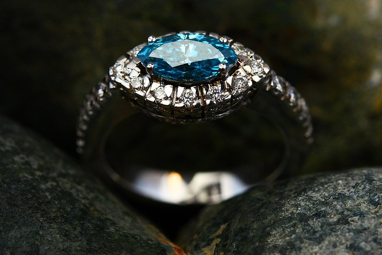
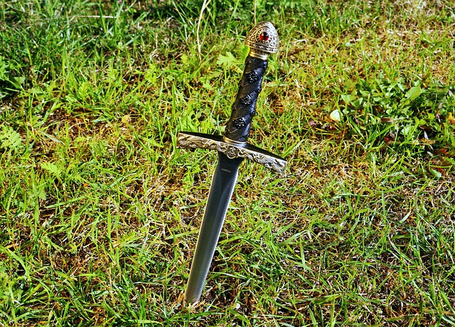

Business Hours and Location
Visit us at Gilmore's Glorious Goods during the following hours:
- Monday to Saturday: 10:00 AM - 4:00 PM
We're conveniently located in the enchanting Abdar's Promenade district of Emon, Tal'dorei. You can find us at:
Gilmore's Glorious GoodsAbdar's Promenade District
Emon, Tal'dorei
About Gilmore's Glorious Goods
Welcome to Gilmore's Glorious Goods, where the fantastical becomes reality. Nestled in the heart of Abdar's Promenade district in the bustling city of Emon, Tal'dorei, our shop is a haven for seekers of enchantment and wonder.
Here, you'll find a diverse array of mystical treasures, from powerful spellbooks and enchanted potions to exquisite jewelry and legendary weapons. Our collection spans ages, drawing upon the rich tapestry of magic that weaves through the realms. Whether you're an aspiring wizard, a battle-hardened adventurer, or simply someone with a taste for the extraordinary, Gilmore's has something to ignite your imagination.
We understand the allure of the arcane and the thrill of discovering the unknown. That's why we carefully curate each item in our store, ensuring that it meets our exacting standards of quality and authenticity. Many of our items have fascinating histories and origins, and our knowledgeable staff is always eager to share the tales behind these magical artifacts.
Our commitment to our customers extends beyond the mere transaction. At Gilmore's Glorious Goods, we believe that the magic is in the experience. That's why we provide a welcoming atmosphere, complete with a consultation corner where our experts can assist you in selecting the perfect item for your needs.
Join us on a journey through the realms of fantasy and mystique. Whether you're seeking a talisman of protection, a rare potion ingredient, or simply a piece of Tal'dorei's glorious history to adorn your home, we invite you to explore our collection and make your own magical discoveries.
Inventory
Ring of Protection
Discover the power and beauty of this enchanting ring. Adorned with intricate designs and sparkling gemstones, it protects the wearer from physical and magical harm. Various levels of enchantment are available at different price points.
Dagger of Life Stealing
Unleash the grace and precision of the elves with this finely crafted dagger. Adorned with ancient eldritch runes, the enchanted blade harvests vitality from those it harms and transfers it to the wielder. Once wielded by a member of Vox Machina, Vax'ildan, this dagger is nearly beyond price.
Ancient Spellbooks

Step into the past with our collection of ancient spellbooks. These dusty tomes hold the secrets of forgotten magic, waiting for a new mage to unlock their power. Spellbooks are available at various price points.
More inventory is available on location and by request.
Sponsorships
Gilmore's Glorious Goods proudly supports the legendary heroes of Tal'dorei, Vox Machina. As devoted patrons of the city's protectors, we stand by Vox Machina in their unwavering quest to safeguard our world from the forces of darkness and chaos. Members of Vox Machina enjoy exclusive discounts at our store as a token of our appreciation. Join us in supporting these valiant champions who keep our realm safe!
Gilmore's Glorious Goods is not accepting further sponsorship requests at this time.